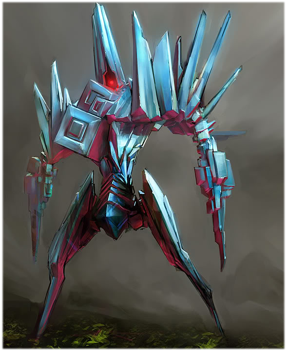

The Lustrius is a particularly deadly X'Tal that can only be described as relentless and unpredictable, it’s very movements leaving a blinding trail of light every way it goes. Its superior speed serves as its primary defense, as its frail body succumbs easily to focused fire.
